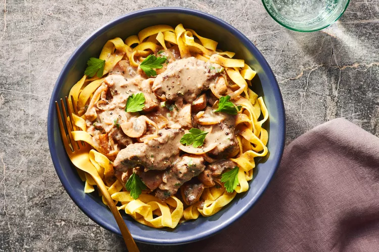

Ingredients
- 1/4 cup extra-virgin olive oil, divided
- 10 ounces white mushrooms, stems discarded and caps quartered
- Kosher salt
- Freshly ground black pepper
- 1 pound hanger steak, sliced across the grain 1-inch thick
- 1/4 cup all-purpose flour
- 1/3 cup dry red wine
- 1 tablespoon unsalted butter
- 1 small onion, thinly sliced
- 1 small garlic clove, minced
- 1 1/2 cups chicken stock or low-sodium broth
- 1 tablespoon Worcestershire sauce
- 1/2 cup sour cream
- 1 teaspoon chopped thyme leaves
- 1 tablespoon chopped flat-leaf parsley
- Buttered fettuccine or egg noodles, for serving
Directions
- In a large skillet, heat 2 tablespoons of the olive oil until shimmering.
Add the mushrooms and cook over moderately high heat until softened, about 3 minutes.
Season the mushrooms with salt and pepper and cook for 1 minute longer.
Transfer the mushrooms to a bowl.
- Generously season the steak with salt and pepper.
Toss the steak with the flour until evenly coated; gently tap off the excess.
- Heat the remaining 2 tablespoons of olive oil in the skillet.
Add the steak slices, without touching, and cook until richly browned, about 5 minutes.
Transfer the steak to the bowl with the mushrooms.
- Add the wine to the skillet and stir to scrape up the browned bits from the bottom of the skillet.
Add the wine to the mushrooms and steak.
- In the same skillet, melt the butter until bubbling.
Add the onion and cook until softened, about 3 minutes.
Season with salt and pepper.
Add the garlic and cook for 1 minute.
- Return the contents of the bowl to the skillet.
Stir in the stock and Worcestershire sauce and simmer over moderate heat until the pan juices thicken slightly, about 7 minutes.
- Remove from the heat and stir in the sour cream, thyme, and parsley.
Season the stroganoff with salt and pepper and serve over fettuccine or egg noodles.